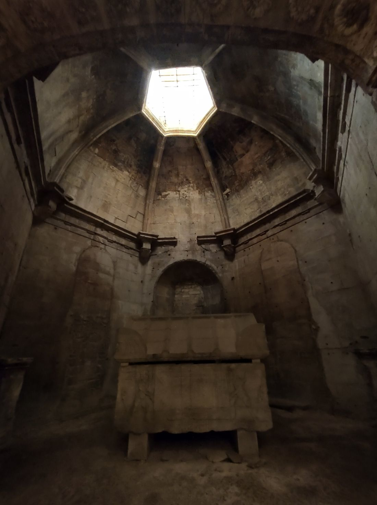

El palacio de Circe

La hechicera Circe te recibe con un banquete. Pero ya convirtió en cerdos a varios de tus hombres. Gracias a una hierba que te dio Hermes, su magia no te afecta, y ella, sorprendida, libera a tu tripulación.
Un año y un consejo
Pasas un año en su palacio. Al partir, Circe te advierte de los peligros que vienen: unas sirenas cuyo canto atrae a la muerte y un estrecho custodiado por un monstruo de seis cabezas. Debes elegir con cuidado cuál enfrentar primero.